문자열 주소 대신 상수 길이를 선택하기
중첩 select·PHI로 고른 문자열의 길이를 미리 계산하고 런타임 strlen 호출을 제거한다.
LLVM_PR_.pptx의 전체 내용입니다. 설명·코드·표·검증 기록을 생략하지 않고 옮겼습니다.
- MD성능 측정·회귀 분석 브리핑223246.md
- PPTX발표자료 · 16장 ALLVM_PR223246__strlen.pptx
- PPTX발표자료 · 16장 BLLVM_PR_.pptx
- PPTX발표자료 · 11장llvm_strlen_pr_presentation.pptx
각 자료는 별도의 버전입니다. 같은 주제라도 구현 상태·설명 범위·수치가 다를 수 있습니다.
이 문서의 목차
LLVM InstCombine / 문자열 선택 뒤의 strlen 제거
발표자 노트
안녕하세요, 정하람입니다. 이번 발표는 문자열 선택 뒤의 strlen을 제거하는 PR의 구현과 성능, 그리고 외부 보고를 받아 수정한 과정까지 다룹니다. 상대 switch table 설명에 이어 Archer의 musttail 보고와 별도의 fixpoint 회귀를 구분하겠습니다. 현재 PR은 리뷰와 필수 CI 완료를 기다리는 단계이며 머지 완료 사례로 소개하지 않습니다. 본문 14장과 부록 2장으로 약 10분을 기준으로 합니다.
https://github.com/llvm/llvm-project/pull/223246
페이지 배치·기호·도식 확인하기

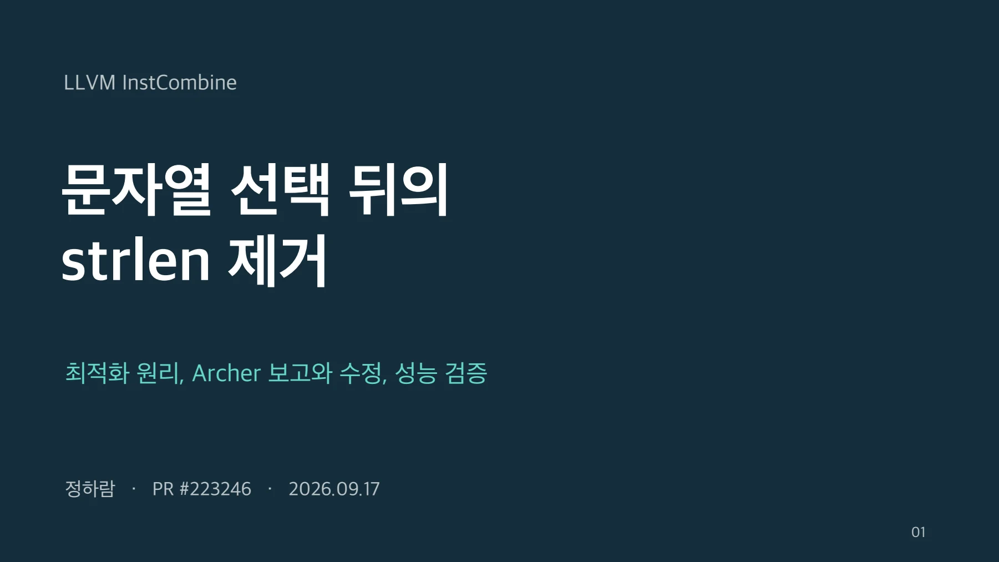
C++ 리터럴 선택에서 남는 길이 계산 / 선택 조건은 런타임 값, 후보 문자열의 길이는 컴파일타임 상수
std::string CodeAsString(StatusCode c) {
const char *p;
switch (c) {
case Ok: p = "ok"; break;
case Missing: p = "missing"; break;
default: p = "cancelled"; break;
}
return std::string(p);
}발표자 노트
문자열 리터럴 각각의 길이는 컴파일 시점에 알 수 있습니다. 그런데 상태에 따라 하나를 고른 뒤 const char 포인터로 std::string을 구성하면, 선택된 포인터의 길이를 구하는 호출이 남을 수 있습니다. 아래는 설명용으로 줄인 예시이며 멘토님이 보신 원본 CodeAsString 함수의 복사본은 아닙니다. 단순한 두 리터럴 select는 이미 기존 LLVM이 처리합니다. 새로 다루는 것은 PHI와 중첩 select입니다.
근거
https://github.com/llvm/llvm-project/issues/217529
https://github.com/llvm/llvm-project/pull/223246
페이지 배치·기호·도식 확인하기

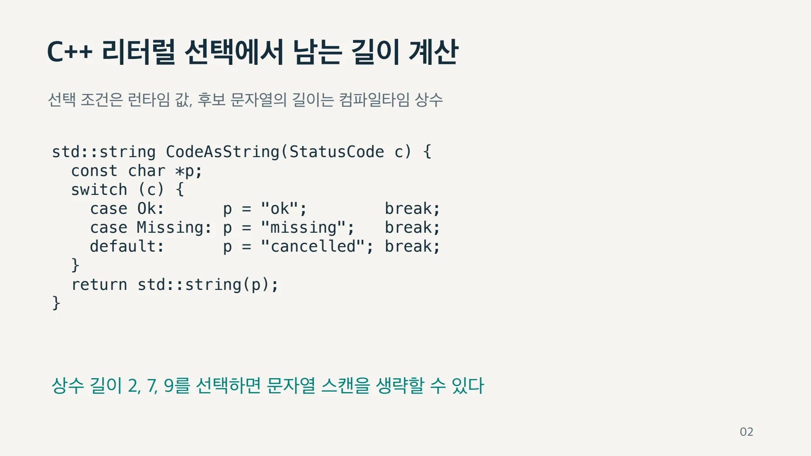
포인터 PHI를 길이 PHI로 접기 / 적용 전
%p = phi ptr
[ @s0, %bb0 ],
[ @s1, %bb1 ],
[ @s2, %bb2 ]
%len = call i64
@strlen(ptr %p)%len = phi i64
[ 2, %bb0 ],
[ 7, %bb1 ],
[ 9, %bb2 ]
ret i64 %len발표자 노트
PHI는 실제로 들어온 제어 흐름의 값을 고릅니다. 이전에는 문자열 주소를 선택하고 그 뒤에 strlen을 호출합니다. 변경 후에는 각 입력을 상수 길이로 평가하고 길이 값을 선택합니다. 이 예시는 설명을 위해 세 입력으로 줄인 IR입니다. select에도 같은 원리가 적용됩니다. 단순 두 갈래 선택은 기존 fold가 맡고, 새 코드는 중첩 구조를 지원합니다.
근거
https://github.com/llvm/llvm-project/issues/217529
https://github.com/llvm/llvm-project/blob/ceb15887eaf909028ccc4606ca05d001af03135c/llvm/lib/Transforms/InstCombine/InstCombineCalls.cpp
페이지 배치·기호·도식 확인하기

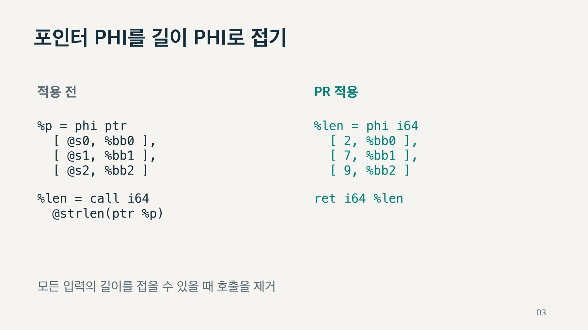
최종 IR에 나타나는 상대 switch table / 문자열 포인터 PHI는 최적화 중 다른 표현으로 바뀔 수 있다
@switch.table.CodeAsString[abi:cxx11](StatusCode).rel| IR 형태 | 선택하는 값 | 관련 처리 |
| 포인터 PHI | 경로별 문자열 주소 | 입력 제어 흐름 |
| 포인터 lookup table | 인덱스별 문자열 주소 | SimplifyCFG |
| 상대 lookup table (.rel) | 문자열 주소까지의 i32 오프셋 | RelLookupTableConverter |
발표자 노트
멘토님이 말씀하신 부분입니다. C++ 코드가 최적화 파이프라인을 거치면 문자열 포인터 PHI가 그대로 남지 않고 lookup table로 바뀔 수 있습니다. SimplifyCFG가 포인터 테이블을 만들고, 타깃이 지원하며 조건을 만족하면 RelLookupTableConverter가 상대 오프셋 테이블로 바꿉니다. .rel은 문자열 길이가 아니라 테이블 시작 주소와 문자열 주소 사이의 32비트 오프셋을 뜻합니다. llvm.load.relative는 이 값을 읽어 문자열 주소를 복원합니다. 이 패스는 PIC에 적합한 테이블을 만드는 목적입니다. 슬라이드의 심볼은 멘토님이 알려 주신 표기이며, 원본 함수나 최초 변경 버전은 제공받지 않아 특정 버전에서 모든 C++이 일괄 변경됐다고 주장하지 않습니다. cxx11 ABI 표기 자체가 strlen 최적화를 의미하지는 않습니다.
근거
https://github.com/llvm/llvm-project/blob/ceb15887eaf909028ccc4606ca05d001af03135c/llvm/lib/Transforms/Utils/RelLookupTableConverter.cpp
https://github.com/llvm/llvm-project/blob/ceb15887eaf909028ccc4606ca05d001af03135c/llvm/lib/Passes/PassBuilderPipelines.cpp
https://llvm.org/doxygen/RelLookupTableConverter_8h.html
페이지 배치·기호·도식 확인하기

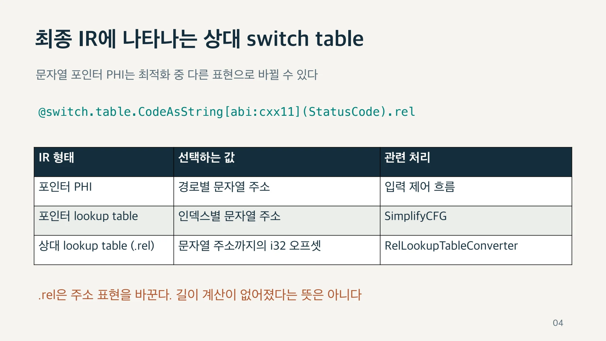
테이블 변환 전의 PHI가 최적화 기회 / 동일한 축소 예제, x86-64 Linux PIC, LLVM 전체 O2
| 적용 시점 | 최종 핵심 IR | strlen |
| 기존 LLVM | load.relative + strlen | 남음 |
| PHI 입력에 PR 적용 | 길이 테이블 [2, 7, 9, 10] 조회 | 제거 |
| 이미 .rel로 변환된 IR에 적용 | load.relative + strlen | 남음 |
발표자 노트
원래 이슈의 네 문자열 PHI 재현 예제를 직접 실행했습니다. x86_64-unknown-linux-gnu, PIC, 전체 O2에서는 부모 커밋이 상대 테이블 조회 후 strlen을 남겼습니다. PR은 그 이전 PHI 단계에서 길이를 접어 최종적으로 2, 7, 9, 10을 담은 i8 길이 테이블을 만들고 strlen을 없앴습니다. 반대로 부모가 만든 상대 테이블 IR에 PR의 InstCombine만 적용하면 호출이 남습니다. 따라서 이미 테이블에서 읽은 포인터를 일반적으로 분석하는 기능과는 범위가 다릅니다. 이 장은 IR 재현 결과이며 앞서 측정한 macOS 성능 실험의 설정과 구분합니다. macOS arm64에서는 같은 예제가 일반 포인터 테이블로 남았으므로 상대 테이블 선택은 타깃과 조건에 의존합니다.
근거
https://github.com/llvm/llvm-project/issues/217529
https://github.com/llvm/llvm-project/blob/ceb15887eaf909028ccc4606ca05d001af03135c/llvm/lib/Transforms/Utils/RelLookupTableConverter.cpp
로컬 재현: presentation/evidence/base-x86-pic.ll
로컬 재현: presentation/evidence/pr-x86-pic.ll
로컬 재현: presentation/evidence/pr-on-relative-x86.ll
페이지 배치·기호·도식 확인하기

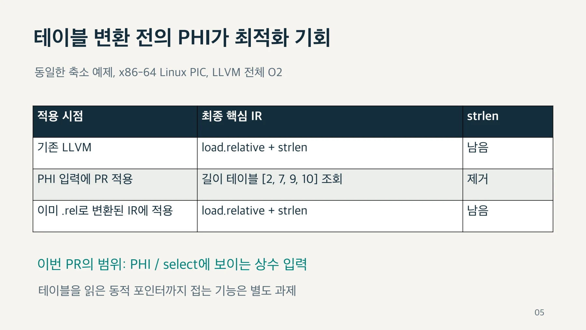
구현과 적용 조건 / 평가 경로
발표자 노트
ConstantFolding에 strlen과 wcslen의 상수 평가를 추가하고, InstCombine에서 단항 constant-foldable libcall의 select/PHI 입력을 재귀적으로 처리합니다. 각 leaf를 기존 simplifyCall로 평가해 길이가 모두 접힐 때 결과를 만듭니다. 깊이 제한 16, 순환 감지, 캐시를 둡니다. 동적 포인터, 변경 가능한 전역과 길이가 증명되지 않은 입력은 거절하고, musttail 호출을 보존합니다. wcslen은 대상 모듈의 wchar 크기를 참조합니다. 이 구현은 일반 단항 libcall 경로를 사용하므로 소스 수준의 영향은 strlen 이름만으로 한정되지는 않습니다.
근거
https://github.com/llvm/llvm-project/blob/ceb15887eaf909028ccc4606ca05d001af03135c/llvm/lib/Transforms/InstCombine/InstCombineCalls.cpp
https://github.com/llvm/llvm-project/pull/223246
페이지 배치·기호·도식 확인하기

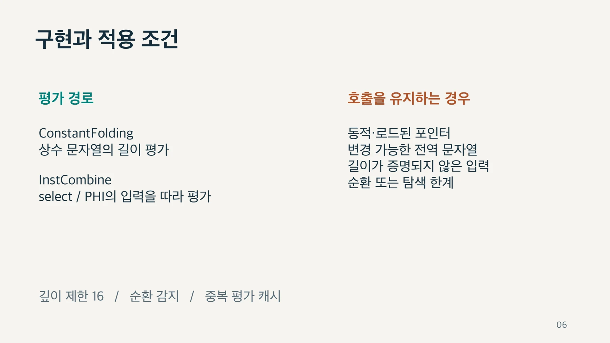
PR 수정 경과와 외부 버그 보고 / 2026.09.17 확인, 현재 HEAD ceb15887eaf9
| 커밋 | 확인된 사건 | 구분 |
| 509fe82509 | Archer가 musttail crash 보고 | 이전 보고 대상 |
| ae605b914df9 | musttail 보호와 회귀 테스트 추가 | 첫 번째 수정 |
| ceb15887eaf9 | 남은 호출을 작업 목록에서 처리 | 별도 fixpoint 수정 |
발표자 노트
Archer가 보고한 대상은 현재 HEAD가 아니라 이전 509fe82509 커밋입니다. 당시 musttail 결과를 상수로 바꾸어 verifier가 실패하는 재현 사례가 공개되었습니다. 이후 ae605b9에서 musttail 경로를 보호하고 회귀 테스트를 추가했습니다. 다음 ceb1588은 별개로 발견한 작업 목록의 fixpoint 회귀 수정입니다. 이 둘은 원인이 다릅니다. Archer 이슈가 열려 있다는 사실만으로 공개 사례가 현재도 재현된다고 판단하지 않습니다. 반대로 이슈의 추가 버그 두 건까지 모두 해결됐다고 주장하지도 않습니다.
근거
https://github.com/cuhk-s3/Archer/issues/26
https://github.com/llvm/llvm-project/pull/223246
페이지 배치·기호·도식 확인하기

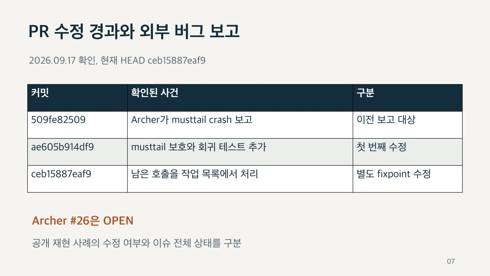
musttail 결과의 직접 반환 보존 / 보고된 오류
musttail call result
must be returned
ret i64 5%len = musttail call i64
@strlen(ptr nonnull @s5)
ret i64 %len발표자 노트
공개된 재현 사례에서 false인 select는 s5를 가리키고 문자열 길이는 5입니다. 그렇더라도 남아 있는 musttail 호출의 반환값을 상수 5로 대체하면 해당 호출 결과를 직접 반환해야 한다는 IR 제약을 위반합니다. 보고서는 musttail call result must be returned 오류를 보여 줍니다. canConstantFoldCallTo와 InstCombine의 결과 교체 경로에서 musttail 호출을 제외하고 회귀 테스트를 추가했습니다. 2026년 9월 17일 현재 빌드로 공개 입력과 동일한 instcombine<no-verify-fixpoint> 명령을 실행했고, musttail call과 ret %len을 유지한 정상 출력을 확인했습니다. 이 명령의 no-verify-fixpoint는 재현 보고서에 맞춘 것이며 IR verifier를 끈 것이 아닙니다. 추가 버그 2건의 상세 링크는 인증서 오류로 열리지 않아 이 검증에 포함하지 않았습니다.
근거
https://github.com/cuhk-s3/Archer/issues/26
https://github.com/cuhk-s3/Archer/issues/26#issuecomment-5657985413
로컬: archer-musttail-current.ll
페이지 배치·기호·도식 확인하기

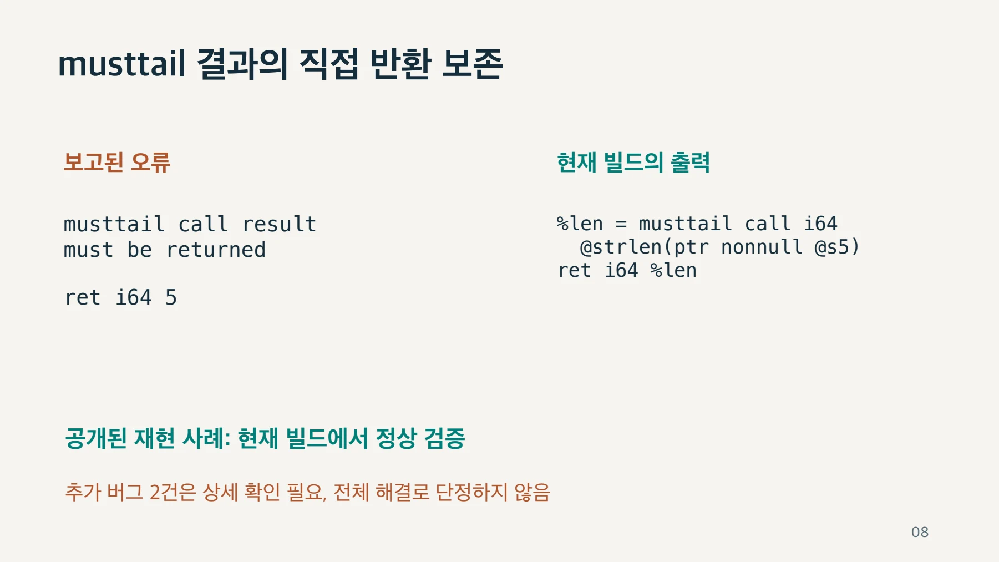
별도로 발견한 fixpoint 회귀 / 수정 전 8건 실패 (ae605b9)
발표자 노트
이전 커밋 ae605b9 기준으로 관련 strlen과 wcslen 테스트 19개까지 검증 범위를 넓혔을 때 8건이 fixpoint 오류를 냈습니다. 이는 8개의 독립적인 버그가 아니라, 상수 접기 후 즉시 삭제하지 않은 호출을 작업 목록에서 누락한 동일한 처리 문제로 여러 테스트가 함께 실패한 것입니다. 이후 수정 커밋 ceb1588에서 실제로 삭제한 명령만 건너뛰고 남은 호출은 같은 pass에서 계속 처리하게 고쳤습니다. 수정 후 같은 targeted 19건은 모두 통과했습니다. 이 fixpoint 회귀는 Archer의 musttail 보고 및 추가 버그 2건과 별개입니다. 확장 검증에서는 InstCombine, InstSimplify, SCCP와 remarks 테스트 2263개 통과, 92개 미지원, 실패 0개를 확인했지만 전체 LLVM 프로젝트와 모든 플랫폼의 테스트를 의미하지는 않습니다.
근거
https://github.com/llvm/llvm-project/commit/ceb15887eaf909028ccc4606ca05d001af03135c
https://github.com/llvm/llvm-project/pull/223246#issuecomment-5674636122
페이지 배치·기호·도식 확인하기

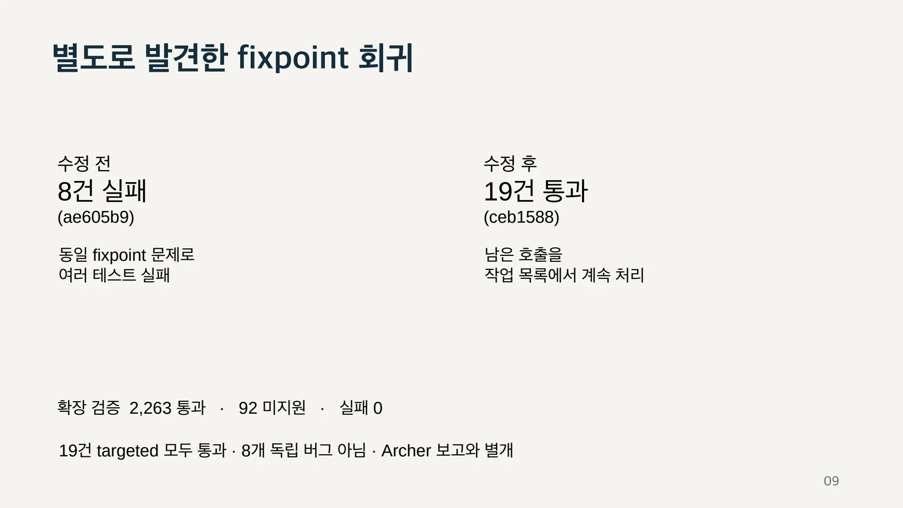
현재 PR 상태와 남은 확인 / PR은 OPEN, 승인·필수 CI 완료 여부를 계속 확인해야 함
| 항목 | 확인 상태 |
| 리뷰 | nikic에게 요청, 제출된 리뷰 없음 |
| 표시된 성공 검사 | libcxx CI, mergeability, 라벨 워크플로 |
| 필수 Linux / Windows CI | 첨부 화면에서 Expected, 실행 승인 대기 |
| Archer 추가 버그 2건 | 상세 내용과 현재 재현 여부 확인 필요 |
| 로컬 검증 | 2,263 통과 / 92 미지원 / 실패 0 |
발표자 노트
확인 시점은 2026년 9월 17일입니다. GitHub API에서 PR은 OPEN이며 nikic에게 리뷰를 요청한 상태이고 제출된 리뷰는 없습니다. libcxx 관련 두 상태와 mergeability, 라벨 워크플로는 성공입니다. 사용자 첨부 GitHub 화면에는 세 워크플로가 유지관리자 승인을 기다리고 Linux와 Windows 필수 검사가 Expected로 표시되어 있습니다. API의 표시된 성공 목록만으로 필수 CI가 완료됐다고 볼 수 없습니다. 첨부 화면에는 base branch보다 뒤처져 있으나 clean merge 가능하다고도 표시되었습니다. 로컬 테스트 2263개 통과와 원격 필수 CI는 별도 결과입니다. API의 mergeStateStatus는 이번 조회에서 UNKNOWN이므로 머지 가능 상태를 단정하지 않습니다. 추가 버그 2건은 공개 이슈에서 존재 언급만 확인했고 상세 페이지는 인증서 오류로 접근하지 못했습니다.
근거
https://github.com/llvm/llvm-project/pull/223246
https://github.com/cuhk-s3/Archer/issues/26
사용자 첨부 GitHub 화면 및 2026.09.17 GitHub API 조회
페이지 배치·기호·도식 확인하기

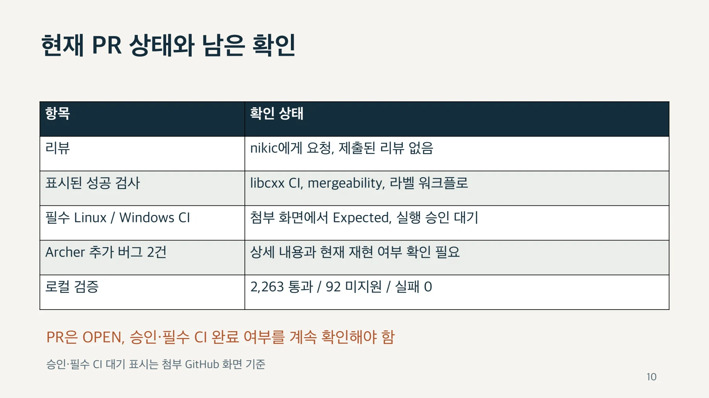
성능 측정 조건 / 시간은 반복 중앙값, 단위는 ns/호출, 드라이버 비용 포함
| 항목 | 조건 |
| 비교 | 동일 frontend IR + 부모 opt / PR opt + 동일 llc |
| 환경 | macOS arm64, Release, Clang frontend 22.1.8 |
| 반복 | 10만 회 warmup, 15회 측정, 실행 순서 무작위화 |
| 입력·검증 | 런타임 입력 4,096개, 독립적으로 계산한 checksum |
| 분리 | 함수별 실행 파일, noinline, 별도 드라이버, LTO 없음 |
발표자 노트
같은 frontend로 만든 IR에 부모 커밋과 PR의 전체 O2와 O3를 적용하고 같은 llc backend로 코드 생성했습니다. 따라서 다른 Clang 릴리스 간 비교가 아닙니다. kernel은 noinline이고 드라이버는 별도 translation unit에서 LTO 없이 컴파일합니다. 4096개 런타임 입력, 프로세스당 10만 회 warmup, 15회 반복으로 측정했습니다. 보통 2천만 호출이고 문자열 생성 작업은 2백만 호출입니다. 모든 checksum을 Python으로 계산한 기대값과 검증했습니다. 최종 결과는 함수별 실행 파일을 사용합니다. 합친 실행 파일에서는 같은 코드의 대조군도 달라지는 배치 효과가 관측되어 분리했습니다. CPU 고정과 다른 앱 종료는 하지 않았으므로 작은 차이는 개선으로 주장하지 않습니다.
근거
https://github.com/llvm/llvm-project/pull/223246#issuecomment-5674636122
로컬: environment.json, isolated/raw.csv, cpp/raw.csv
페이지 배치·기호·도식 확인하기

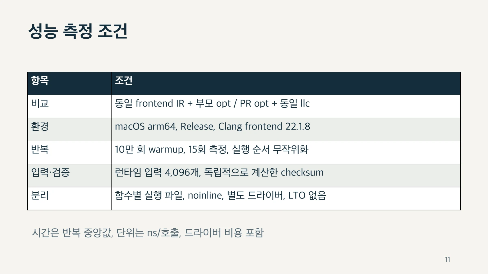
리터럴 선택 함수의 호출 제거 효과 / O2, ns/호출, 짧을수록 빠름
발표자 노트
단순히 두 리터럴 중 하나를 고르는 기존 최적화는 대조군에서 차이가 없었습니다. 새 기여를 보여 주는 중첩 strlen은 약 4.13배, 상태 코드 분기는 5.92배, std::string_view는 4.46배였습니다. 차트는 배속이 아니라 회당 실행 시간으로 그렸으며 짧을수록 좋습니다. 결과에는 공통 드라이버 비용이 포함됩니다. 이 숫자는 아주 작은 합성 함수의 국소적 효과입니다. 일반 프로그램 전체에 그대로 적용할 수는 없습니다.
근거
https://github.com/llvm/llvm-project/pull/223246#issuecomment-5674636122
로컬: isolated/summary.json, cpp/summary.json
페이지 배치·기호·도식 확인하기

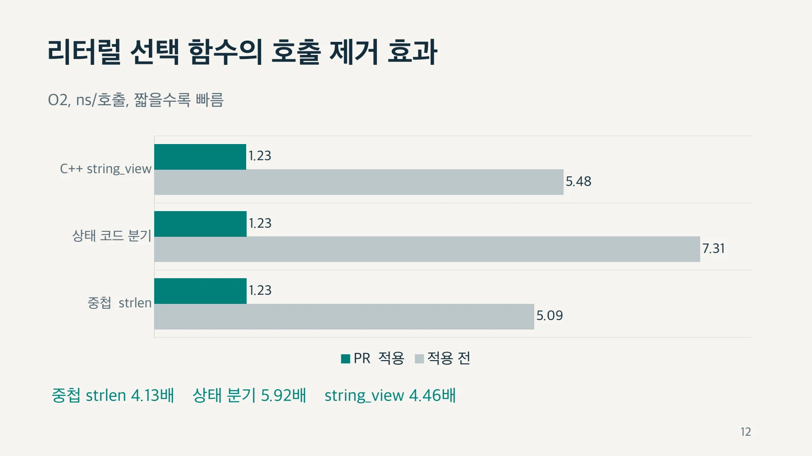
문자열 생성·해시 작업의 시간 8.8% 감소 / 8.8%
발표자 노트
좀 더 많은 일을 하는 C++ 합성 작업도 측정했습니다. 상태별 리터럴로 std::string을 만들고 구분자와 동적 메시지를 붙인 뒤 결과의 모든 바이트를 해시합니다. 원래 102.283ns에서 PR 적용 후 93.2605ns로 줄어 약 8.8% 감소입니다. prefix의 길이 호출이 사라진 것을 확인했습니다. 동적 메시지의 길이가 모두 상수라고 가정하지 않았습니다. 이것은 I/O를 포함하지 않는 합성 문자열 작업입니다. 실제 로그 서버의 전체 처리량 개선을 뜻하지는 않습니다.
근거
https://github.com/llvm/llvm-project/pull/223246#issuecomment-5674636122
로컬: cpp/kernels는 상위 kernels.cpp, cpp/summary.json
페이지 배치·기호·도식 확인하기

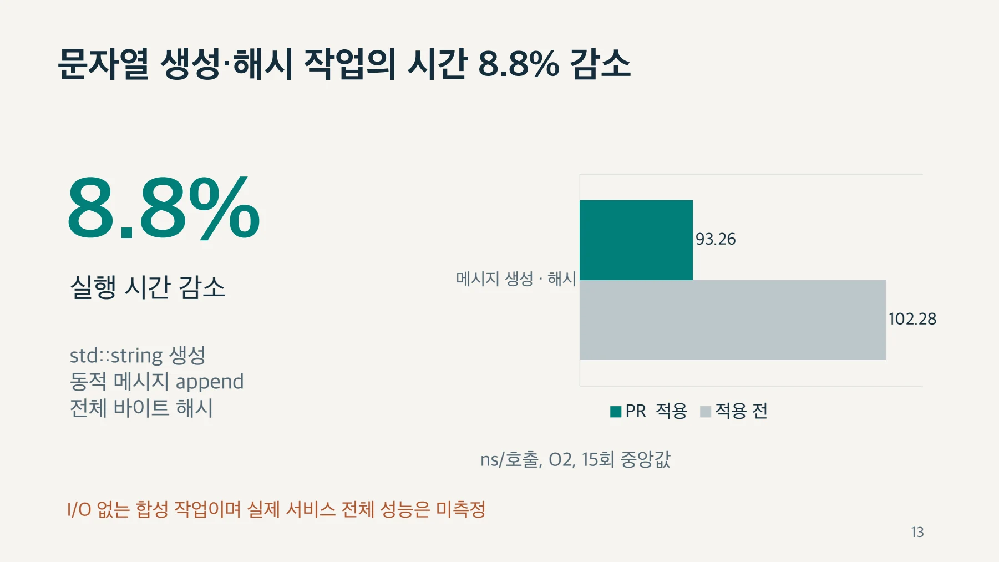
결론과 적용 범위 / 상수 길이 선택으로 런타임 스캔을 생략
발표자 노트
핵심은 세 가지 관계입니다. 문자열 후보의 길이가 모두 상수이고 select나 PHI 형태로 보일 때 호출을 없앨 수 있습니다. 최종 IR에 상대 테이블이 보인다고 해서 처음부터 그 형태였던 것은 아니므로, 최적화가 적용되는 시점이 중요합니다. 이미 로드된 포인터만 남아 있다면 이번 PR의 직접 대상 밖입니다. 측정은 작은 함수에서 큰 차이, 주변 문자열 작업을 포함하면 8.8% 감소를 보여 주었습니다. 다음 과제는 실제 코드에서 해당 패턴이 실행되는 비중과 프로그램 전체 처리량을 측정하는 것입니다. strlen 호출 수만 많다는 사실로 효과를 일반화하면 안 됩니다.
현재 PR은 OPEN입니다. 공개 musttail 사례는 수정과 재검증을 확인했지만, 추가 2건의 상세 내용과 원격 필수 CI는 별도로 확인해야 합니다.
https://github.com/llvm/llvm-project/pull/223246
https://github.com/cuhk-s3/Archer/issues/26
페이지 배치·기호·도식 확인하기

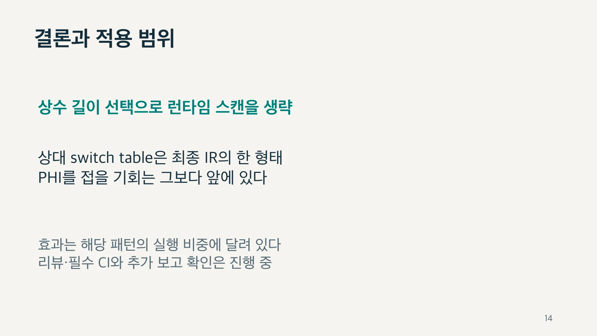
부록 1. O2 전체 측정 결과 / 측정일 2026.09.15 / 15회 중앙값 / 대조군의 작은 차이는 개선으로 주장하지 않음
| 합성 사례 | 이전 ns | PR ns | 배속 |
| 단순 select (대조군) | 1.233 | 1.230 | 1.00× |
| 중첩 select | 5.086 | 1.233 | 4.13× |
| 상태 switch / PHI | 7.306 | 1.233 | 5.92× |
| 중첩 wcslen | 9.681 | 1.233 | 7.85× |
| 긴 리터럴 선택 | 14.047 | 1.229 | 11.43× |
| 동적 포인터 선택 (대조군) | 7.033 | 6.992 | 1.01× |
| 동적 strlen (대조군) | 5.336 | 5.332 | 1.00× |
| 로그 길이 계산 | 17.976 | 14.391 | 1.25× |
| C++ string_view | 5.478 | 1.229 | 4.46× |
| C++ 메시지 생성·해시 | 102.283 | 93.260 | 1.10× |
발표자 노트
본문에서 생략한 대조군과 긴 문자열, wcslen 결과입니다. 모든 시간은 ns/호출입니다. 동적 포인터 선택과 일반 strlen의 작은 차이는 의미 있는 개선으로 해석하지 않습니다. 긴 리터럴 선택은 64, 128, 256바이트 후보입니다. 최대 배속만 대표 결과로 내세우지 않고 C++ 작업의 시간 감소를 함께 제시했습니다.
근거
https://github.com/llvm/llvm-project/pull/223246#issuecomment-5674636122
페이지 배치·기호·도식 확인하기

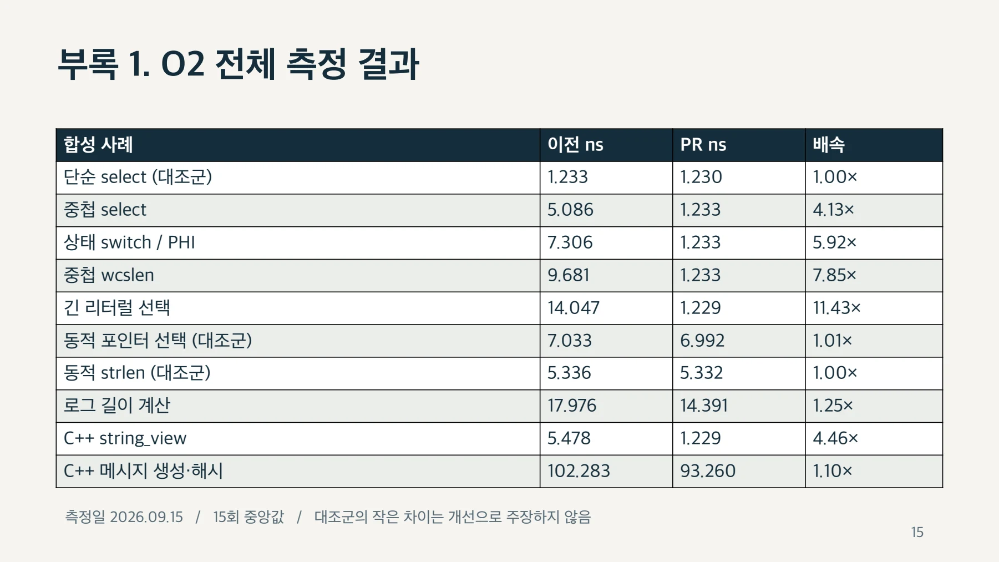
부록 2. 근거와 재현 / 문제와 구현
부모: d283a5551095
PR + 수정: ceb15887eaf9
x86_64-unknown-linux-gnu
-relocation-model=picopt -passes="default<O2>"
opt -passes=instcombine발표자 노트
원래 이슈 217529와 PR 223246, 성능 댓글에 재현 소스와 스크립트가 있습니다. 멘토님이 알려 주신 CodeAsString 심볼의 원본 전체 IR과 변경 버전은 확보하지 못했으므로, 그 함수의 역사 자체를 검증했다고 말하지 않습니다. 대신 이슈의 동일한 축소 입력으로 상대 테이블 생성과 PR 적용 시점의 차이를 재현했습니다. 자세한 명령과 출력은 함께 제공한 IR 재현 문서에 있습니다. 상대 테이블 전환 패스의 소스와 pipeline 배치도 근거로 확인했습니다.
근거
https://github.com/llvm/llvm-project/issues/217529
https://github.com/llvm/llvm-project/pull/223246
https://github.com/llvm/llvm-project/pull/223246#issuecomment-5674636122
https://github.com/llvm/llvm-project/blob/ceb15887eaf909028ccc4606ca05d001af03135c/llvm/lib/Transforms/Utils/RelLookupTableConverter.cpp
https://github.com/llvm/llvm-project/blob/ceb15887eaf909028ccc4606ca05d001af03135c/llvm/lib/Passes/PassBuilderPipelines.cpp
페이지 배치·기호·도식 확인하기

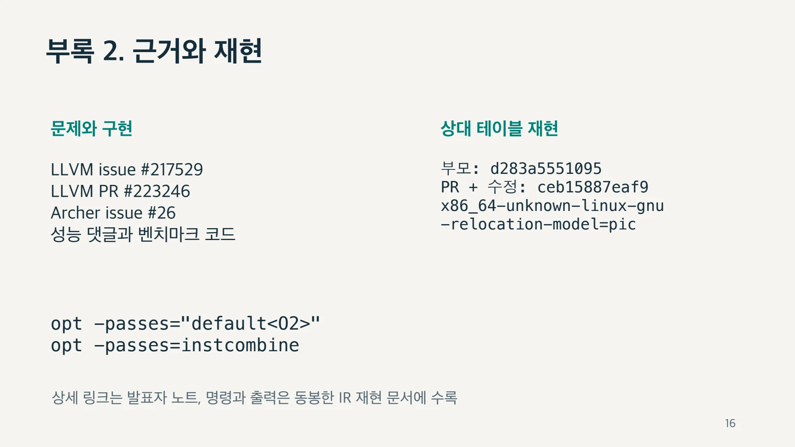
핵심 원리와 편집 주석
어떤 호출을 없애는가
후보 문자열이 모두 상수면 각 후보의 길이를 컴파일할 때 구할 수 있다. 실행 중에는 문자열을 스캔하는 대신 길이 값 자체를 선택한다.
; Before: 주소를 선택한 뒤 길이를 계산한다.
%inner = select i1 %c2, ptr @missing, ptr @cancelled
%p = select i1 %c1, ptr @ok, ptr %inner
%len = call i64 @strlen(ptr %p)
; After: 이미 아는 길이를 선택한다.
%inner.len = select i1 %c2, i64 7, i64 9
%len = select i1 %c1, i64 2, i64 %inner.len단순한 두 리터럴의 select는 기존에도 최적화된다. 이 자료는 중첩 select와 PHI가 새로 처리되는 예제를 구분한다.
구현과 보존 조건
상수 문자열의 평가는 ConstantFolding에서 수행한다. InstCombine은 select·PHI 입력을 따라 결과를 구성한다. strlen 전용 예외 처리보다 기존 상수 접기 체계를 사용하는 설계다.
- 길이를 알 수 없는 동적 입력이 있으면 호출을 유지한다.
- 변경 가능한 전역 문자열은 상수 문자열로 가정하지 않는다.
- 순환을 감지하고 탐색 깊이를 제한한다.
- 평가 결과를 캐시해 중복 탐색을 줄인다.
- wcslen에는 필요한 wchar 크기 정보가 있어야 한다.
- musttail의 직접 반환 조건을 보존한다.
서로 다른 오류의 수정
자료는 Archer의 musttail 크래시 보고와 별도로 발견한 fixpoint 회귀를 구분한다. 핵심 사례 몇 개만 통과한 상태에서도 인접 테스트는 실패할 수 있었다.
호출 결과를 접은 뒤 남은 호출을 작업 목록에서 계속 처리하도록 수정했다. 자료는 19개 관련 테스트 통과와 확장 검증 2,263개 통과·92개 미지원을 기록한다.
8개 테스트 실패는 같은 fixpoint 문제를 검출한 것이다. 이를 독립적인 버그 8개로 세지 않는다. 초기 Markdown의 로컬 수정 상태와 후속 발표의 브랜치 반영 상태도 구분한다.
측정 방법
자료의 측정일은 2026년 9월 15일이다. macOS arm64에서 같은 frontend IR, 부모·PR opt, 같은 llc를 사용했다. O2와 O3는 전체 최적화 파이프라인으로 비교했다.
- 10만 회 준비 실행 뒤 15회 측정의 중앙값을 사용했다.
- 실행 순서를 무작위화했다.
- 런타임 입력과 독립적으로 계산한 checksum을 사용했다.
- 함수별 실행 파일과 별도 드라이버를 사용했다.
- LTO를 사용하지 않고 noinline 조건을 유지했다.
보고된 O2 결과
| 합성 사례 | 이전 ns/호출 | PR ns/호출 | 시간 감소 |
|---|---|---|---|
| 중첩 select | 5.086 | 1.233 | 75.8% |
| switch / PHI | 7.306 | 1.233 | 83.1% |
| C++ string_view | 5.478 | 1.229 | 77.6% |
| C++ 문자열 생성·append·해시 | 102.283 | 93.260 | 8.8% |
측정과 자료의 한계
처음 한 실행 파일에 모은 측정에서는 같은 기계어의 대조군도 느려졌다. 함수를 분리해 다시 측정하자 차이가 줄었다. 작성자는 배치 효과의 원인을 확정하지 않고 최종 발표에 분리 측정값을 사용했다.
벤치마크 원시값과 스크립트의 상대 링크는 첨부 자료에 없는 파일을 가리킨다. 이 사이트는 그 파일을 제공한다고 표시하지 않는다. PR의 현재 상태도 원자료 작성 시점과 구분한다.
문서 전문과 버전
- MD성능 측정·회귀 분석 브리핑223246.md
- PPTX발표자료 · 16장 ALLVM_PR223246__strlen.pptx
- PPTX발표자료 · 16장 BLLVM_PR_.pptx
- PPTX발표자료 · 11장llvm_strlen_pr_presentation.pptx
각 자료는 별도의 버전입니다. 같은 주제라도 구현 상태·설명 범위·수치가 다를 수 있습니다.
관련 이슈와 PR
구현·병합 상태와 측정값은 해당 제출 자료의 작성 시점 기준입니다.